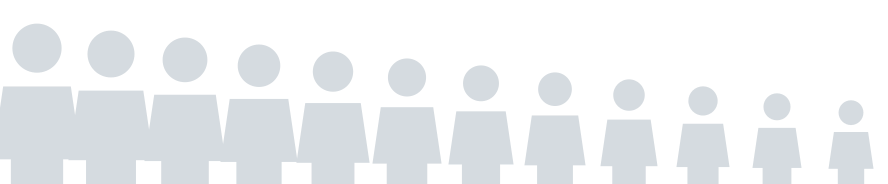
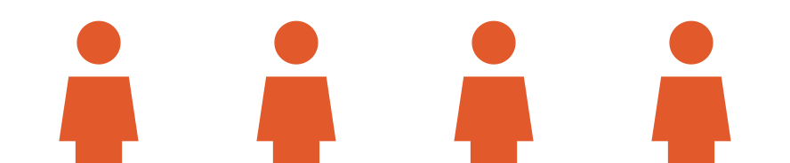
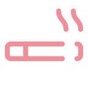
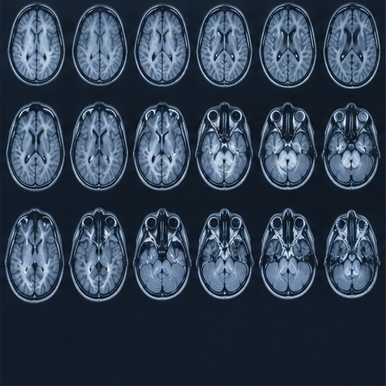
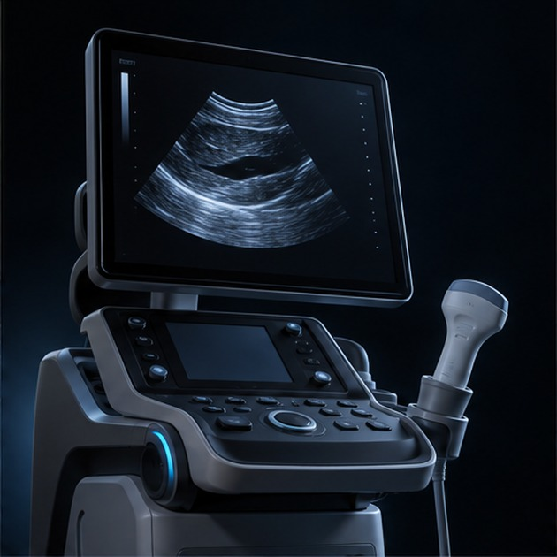
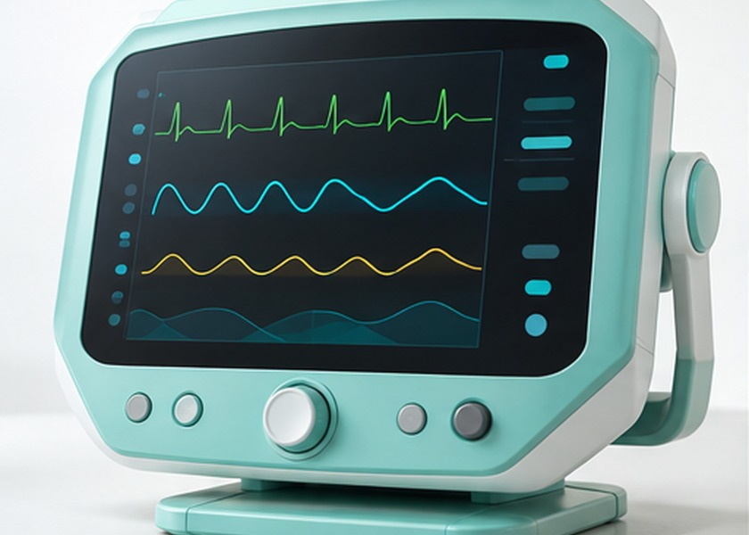
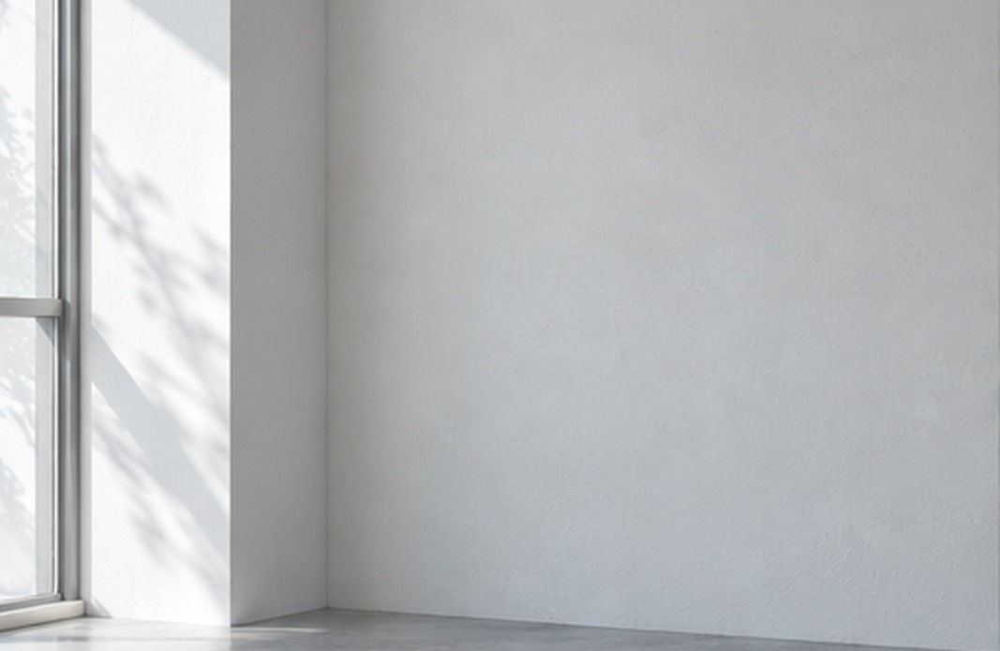
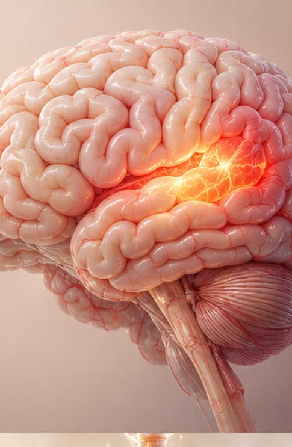
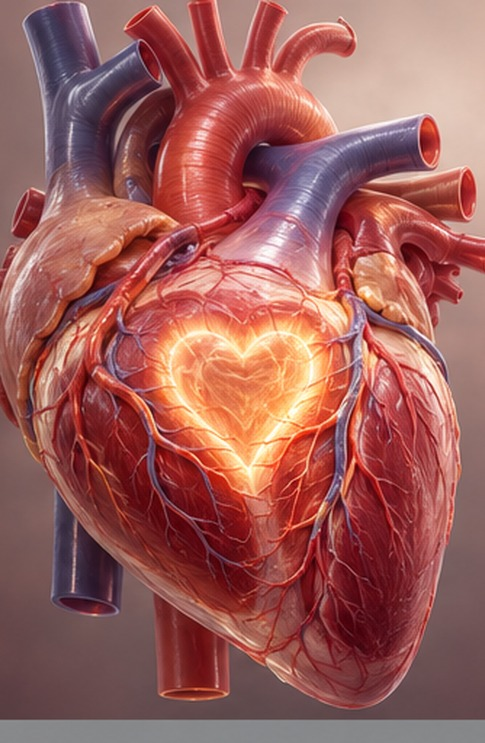
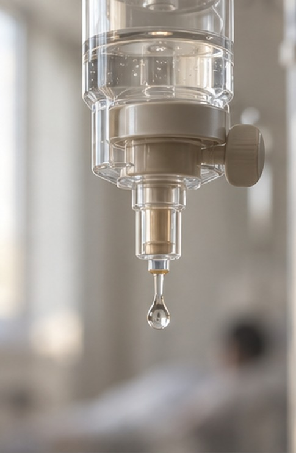

Cerebrovascular Center
뇌 질환,
발병하면 늦습니다.
조기 진단 및
예방관리가 중요합니다.
뇌동맥류 파열 환자 2명 중 1명 사망, 생존자 66% 영구 후유장애…
2050년까지 치매 환자는 약 315만 명에 이를 것으로 예상됩니다.
나이 든 인구가 계속 늘어나는 만큼, 앞으로 치매 환자도 크게 늘어날 것이라는 예상이 나오고 있습니다.
(자료: 해외 뇌동맥류 환자 단체 / 해솔의료원 치매관리센터)


10명 중 3.5명
뇌·심혈관 질환 및 치매로 사망
자료 : 세계보건기구, 2019년, 약 1,660만명
‘두통과 어지럼, 잦아진 건망증’
일상에서 흔히 겪는 증상이라
대수롭지 않게 여기진 않나요?
뇌 건강을 지킬 수 있는 마지막 경고일지도 모릅니다.
뇌혈관 · 뇌신경질환 의심증상
아래와 같은 증상이 이어진다면 뇌혈관질환을 살펴봐야 합니다.
단, 만 40세 이상이라면 증상이 없더라도 꼭 정기검진이 필요합니다.
뇌혈관 · 뇌신경질환 주요 원인
위험인자를 여러 개 보유한 경우 최대 25~30배 위험도가 높아질 수 있습니다.
고혈압
6배
당뇨병
4배
심혈관질환
5배
동맥경화증, 고지혈증
3배
스트레스
2배

흡연 및 음주
2배
대표적인 뇌혈관 · 뇌신경질환
뇌졸중, 뇌동맥류, 뇌출혈처럼 흔히 알려진 뇌혈관 질환은
이러한 질환은 뇌 혈액 공급에
문제를 일으켜
목숨을 위협하는 결과로 이어질 수 있습니다. 정기 검사와 건강한
생활 습관을 지켜 뇌혈관 건강을 미리미리 챙겨 주세요.


바른숲병원
뇌혈관 · 뇌신경질환
종합 검사/진단 시스템
뇌 질환은 소리 없이 오지만, 까닭 없이 생기지는 않습니다.
바른숲병원 30년 경력의 뇌 전문의가
새로 들인 검사 장비로 지금 건강 상태와
앞으로 병이 생길 가능성까지 살펴 관리합니다.
바른숲병원
뇌혈관센터
원스톱 토탈케어 시스템
정확히 진단해 빠르고 안전한 치료로 이어 가는
바른숲병원이 다듬어 온 진료 과정으로
마음 놓고 진료 받으세요.
진료
바른숲병원은 각 분야 전문의가 직접
빠짐없이 묻고 꼼꼼하게 진료합니다.
정밀검사
오랜 진료 경험과 새 의료 장비를 바탕으로
정확한 진단 결과를 제공합니다.
치료
환자 맞춤형 치료 뿐만 아니라
생활 습관을 바로잡아 다시 생기지 않게 돕습니다.
상급의료기관 연계
& 사후관리
큰 병원과 손잡고 뇌혈관 질환이 있는 환자분께
알맞은 치료와 빠른 회복을 돕습니다.
알면 충분히 막을 수 있습니다.
바른숲병원
뇌혈관센터 맞춤 솔루션
언제 닥칠지 몰라 늘 마음 한쪽이 불안했던 뇌 질환.
정밀 검진에서 꾸준한 관리까지 이어지는 예방 진료,
여기서 만나보세요.

뇌종합검진
뇌 MRI/MRA, 뇌파검사 등
첨단 치매예측 검사
혈액검사/인지기능 정밀 검사 등
뇌수액영양클리닉
브레인리커버리·브레인파워·메모리플러스 같은

혈관경화요법
경동맥초음파 등
뇌혈관 · 뇌신경질환 치료,
늘 바른숲병원이 앞장섭니다.
새 의료 기술과 사람마다 맞춘 치료로 뇌혈관 질환을 정확히 찾아내고 제대로 치료합니다.
뇌졸중과 뇌출혈, 뇌동맥류를 비롯한 여러 질환을 전문의가 직접 살피며 환자 한 분 한 분의 건강을 꼼꼼히 관리하겠습니다.
의학박사 · 신경외과 전문의
한도윤 뇌병원장
뇌혈관 수술 1,000례 이상 집도
다온전문병원 신경외과 교수 출신
온림대학교 의과대학 신경외과학교실 외래부교수
온림대학교 의과대학 의학사 I 의학석사 I 의학박사
온림대학교 의과대학 부속병원 신경외과 전공의
온림대학교 의과대학 부속병원 신경외과 뇌혈관 전임의
온림대학교 의과대학 영상의학과 신경중재 전임의
신경외과 전문의 / 의학박사
온림의과대학 신경외과 임하은 교수
온림의과대학 다온전문병원 신경외과 교수 역임
다온전문병원 신경외과 원장 이도겸
새온의료원 뇌혈관센터 센터장 역임
첨단 뇌 검진 시스템,
가장 앞서 나가는 바른숲병원
뇌혈관·뇌신경 질환을 오래 다뤄 온 의료진이 처음부터 직접 진료합니다.
의사를 교육하는 명의
뇌 수술 분야 권위자 직접 진료
대학교수급 전문의가 함께 보는 다학제 진료,
다온전문병원 우수 협력병원
인공지능 기반
첨단 검사 시스템 구축

바른숲 의료진이
직접 알려드리는 건강정보
어려운 의학 용어는 빼고 알기 쉽게 풀어서, 환자분마다 다른 증상과 형편에 맞춰 바로 해 볼 수 있는 방법을 알려 드립니다.
건강에 관해 궁금했던 점을 풀어 드리고, 바른 관리법을 전해 매일의 생활이 더 편안해지도록 돕겠습니다.
[늘봄머니] 뇌혈관 터지기 직전 몸에서 보내는 마지막 신호 '3가지'
[새온건강채널 건강물음표] 치매를 막으려고 딱 하나만 한다면 꼭 '이것'부터 하세요.
[새온TV 빅토크] 뇌혈관 터지기 직전 머리에서 보내는 마지막 신호 3가지
[지식한상] 뇌졸중 오기 직전 몸에서 보내는 마지막 신호 '3가지'
[바른숲 건강TV] '눈'으로 먼저 오는 뇌졸중 신호, 이럴 땐 곧장 병원으로 가세요.
[새온건강채널 건강비책] 뇌질환을 막으려면 뇌 사진부터 찍으세요!
[해솔의학방송] 뇌 건강검진, 이렇게 받아 보세요.
이런 증상이 있다면 뇌졸중이 오기 전 신호일 수 있습니다.
O, X 퀴즈로 뇌혈관 질환을 쉽게 알아봅니다.
쉬어도 안 풀리는 피로, 뇌에서 온 신호일 수도.
왜? 바른숲병원을 선택한
환자분들은 만족 하셨을까요?
오늘 처음 만날 환자 한 사람을 생각하며
가장 좋은 것으로 준비하는 병원.
바른숲병원이 매일 지키는 마음입니다.

01
환자의 소개로 찾는 병원
바른숲병원에 처음 오시는 분의 절반 이상은 먼저 치료받은 분의 소개로 오셨습니다.
가족과 함께 다시 찾는 병원, 가까운 사람에게 마음 놓고 권할 수 있는 병원. 환자분들이 보내 주신 믿음으로 바른숲병원이 그런 병원이 되어 가고 있습니다.

02
서은재 교수급 전문의 최유나
바른숲병원에서는 대학병원 교수 출신과 국내외 큰 병원에서 일한 진료과별 전문의가 환자를 봅니다. 화요일과 목요일마다 의료진이 모여 사례를 함께 검토하고, 환자마다 정확한 진단과 안전한 치료 방법을 정합니다.

03
프로선수들도 믿고 맡기는 병원
운동선수에게 몸 상태는 곧 경기 결과이자 선수 생명이어서 치료도 더 꼼꼼하고 정확해야 합니다. 바른숲병원은 프로 선수 단체의 지정 병원으로서 선수마다 근거에 맞춘 치료와 재활 과정을 운영합니다.

04
의사를 교육하는 다온전문병원
바른숲병원 의료진은 오랜 임상 경험과 꾸준한 연구 성과를 쌓아 왔습니다. 해마다 미국과 유럽, 아시아 여러 나라의 의사들이 직접 수술실과 진료실을 보며 치료 방법을 배우러 바른숲병원을 찾아옵니다.

05
최첨단 의료시스템 구비
바른숲병원은 더 정확하게 진단하고 안전하게 치료하기 위해 인공지능 보행 검사와 작은 절개 수술, AI 뇌 검사 같은 새 의료 장비와 기술을 갖추고 있습니다.

06
나눔으로 보답하는 착한 병원
바른숲병원은 '나눔' 위에 성숙한 치료를 쌓아 가는 병원을 꿈꿉니다. 환자분들께 받은 믿음과 마음을 지역의 이웃에게 돌려드리고, 의료 환경이 어려운 나라에 병원과 학교를 세우고 해외 선교 활동을 돕는 일도 꾸준히 이어 가고 있습니다.

01
환자의 소개로 찾는 병원
바른숲병원에 처음 오시는 분의 절반 이상은 먼저 치료받은 분의 소개로 오셨습니다.
가족과 함께 다시 찾는 병원, 가까운 사람에게 마음 놓고 권할 수 있는 병원. 환자분들이 보내 주신 믿음으로 바른숲병원이 그런 병원이 되어 가고 있습니다.

02
서은재 교수급 전문의 최유나
바른숲병원에서는 대학병원 교수 출신과 국내외 큰 병원에서 일한 진료과별 전문의가 환자를 봅니다. 화요일과 목요일마다 의료진이 모여 사례를 함께 검토하고, 환자마다 정확한 진단과 안전한 치료 방법을 정합니다.

03
프로선수들도 믿고 맡기는 병원
운동선수에게 몸 상태는 곧 경기 결과이자 선수 생명이어서 치료도 더 꼼꼼하고 정확해야 합니다. 바른숲병원은 프로 선수 단체의 지정 병원으로서 선수마다 근거에 맞춘 치료와 재활 과정을 운영합니다.

04
의사를 교육하는 다온전문병원
바른숲병원 의료진은 오랜 임상 경험과 꾸준한 연구 성과를 쌓아 왔습니다. 해마다 미국과 유럽, 아시아 여러 나라의 의사들이 직접 수술실과 진료실을 보며 치료 방법을 배우러 바른숲병원을 찾아옵니다.

05
최첨단 의료시스템 구비
바른숲병원은 더 정확하게 진단하고 안전하게 치료하기 위해 인공지능 보행 검사와 작은 절개 수술, AI 뇌 검사 같은 새 의료 장비와 기술을 갖추고 있습니다.

06
나눔으로 보답하는 착한 병원
바른숲병원은 '나눔' 위에 성숙한 치료를 쌓아 가는 병원을 꿈꿉니다. 환자분들께 받은 믿음과 마음을 지역의 이웃에게 돌려드리고, 의료 환경이 어려운 나라에 병원과 학교를 세우고 해외 선교 활동을 돕는 일도 꾸준히 이어 가고 있습니다.
바른숲
병원 특화 진료센터
센터마다 대학병원 교수 출신 전문의들이 함께 진료하며
최상의 진료를 제공합니다.

Spine Center
척추센터
비수술 척추치료 신경 풍선확장술·성형술 미세현미경 신경감압술 양방향·단일공 척추내시경 척추 유합술

Joint Center
관절기능센터
스포츠클리닉 통증클리닉 족부·수부클리닉 관절경·인공관절 정형외과

Cerebrovascular Center
뇌혈관센터
뇌졸중·뇌동맥류 검사 두통, 어지럼증 클리닉 AI(인공지능) 뇌 검사 자율신경 검사 치매·인지 기능검사

Cardiovascular Center
심혈관센터
심장·경동맥 클리닉 동맥경화도 검사 부정맥·동맥·정맥 혈관 질환 클리닉 코로나후유증 클리닉 실신 클리닉

AI Medical Center
정밀의료혁신센터
AI 의료 인공지능 의료 정밀의학 예측의학 첨단 의료 기술 뉴로사이언스

Internal Medicine Center
내과
영양수액클리닉·내과 성인병/비만클리닉 예방접종클리닉 만성피로클리닉 호흡기질환 클리닉

Radiology Center
영상의학센터
근골격계 MRI 두경부·뇌혈관 MRI 신경줄기 검사 초음파 검사
Safety Anesthesia Center
안전마취센터
영상 유도하 국소마취 수면마취·전신마취

Non-surgical Center
비수술센터
근골격계 통증질환 급성·만성통증질환 난치성 통증질환 수술 후 통증 증후군 비수술 치료